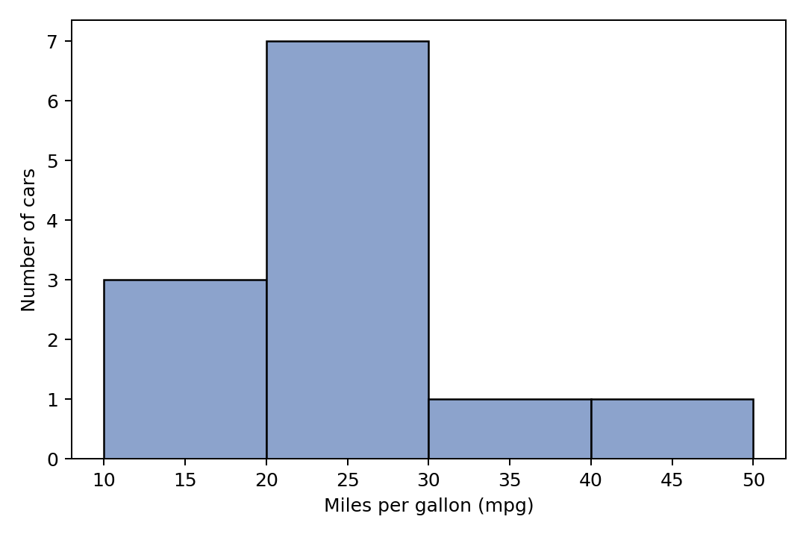

第二章 / 2.3 Python 实验 / 代码 2.3.9-04
直方图：按区间计数
这一块属于连续的 Notebook。请先运行前面的代码块；变量可能依赖前面的定义。全部数据均为教学用虚构数据。
代码 2.3.9-04
逐步读代码
bins给的是区间边界而非区间个数；五个边界划出四个区间。ax.hist同时返回三个对象，依次赋给counts、edges、patches：各箱频数、边界数组、用于画柱子的图形对象。edgecolor指定柱子边线，color指定内部颜色；坐标轴分别标出mpg和数量。counts.astype(int)把计数显示为整数，而不改变原始mpg。- 两次
savefig保存图，display展示，close释放对象；最后一个区间包含最右边界，其余区间右端不含。
实际运行输出
[3 7 1 1]
实际运行图形

下载矢量图